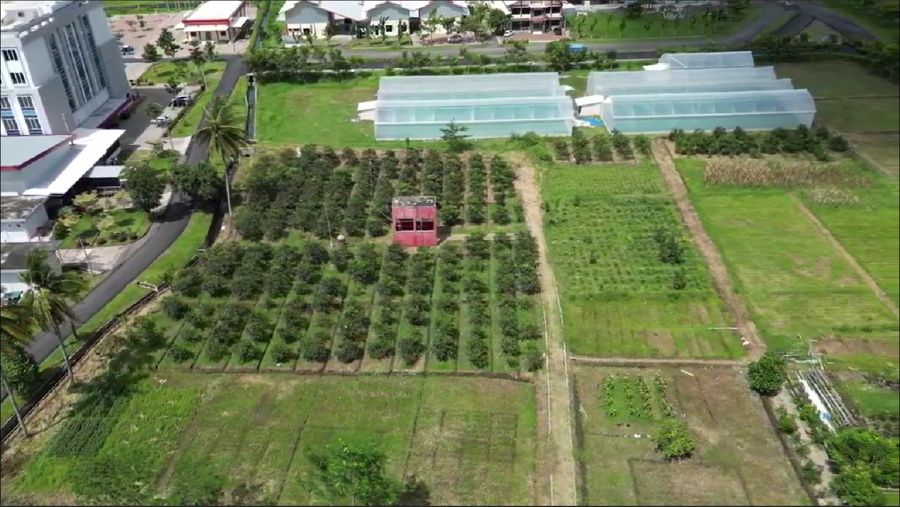
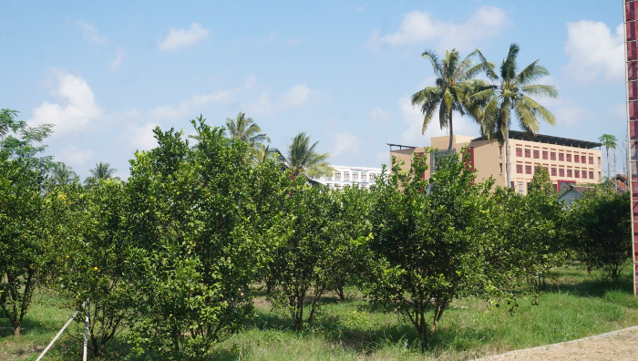
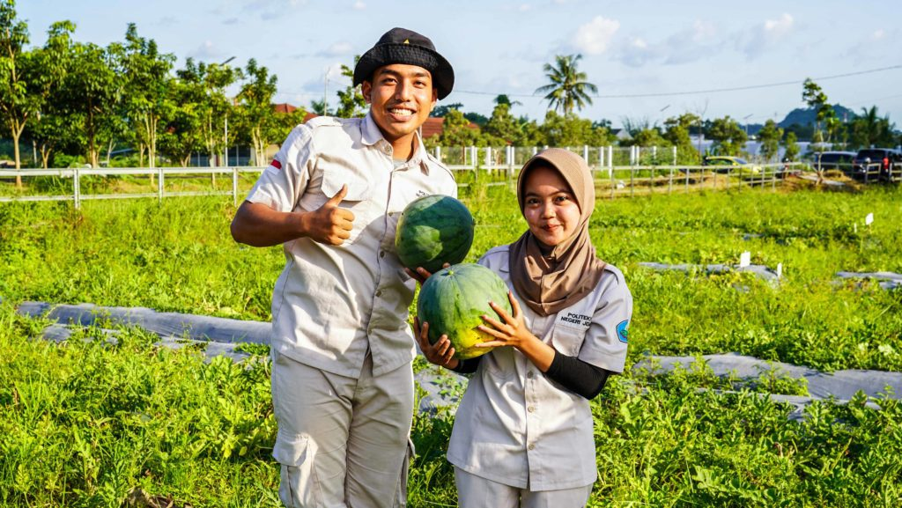
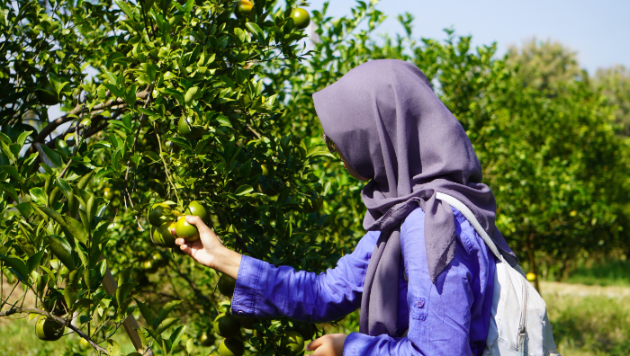
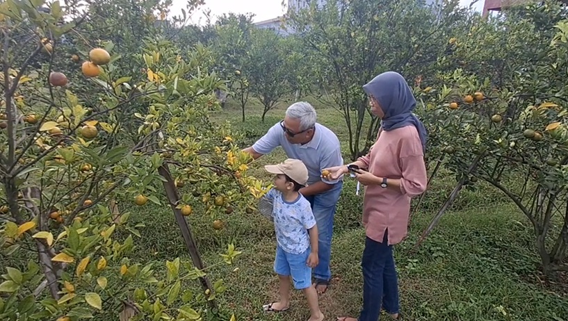
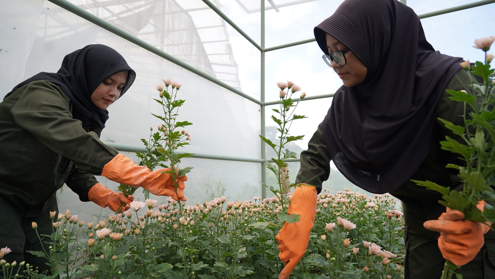
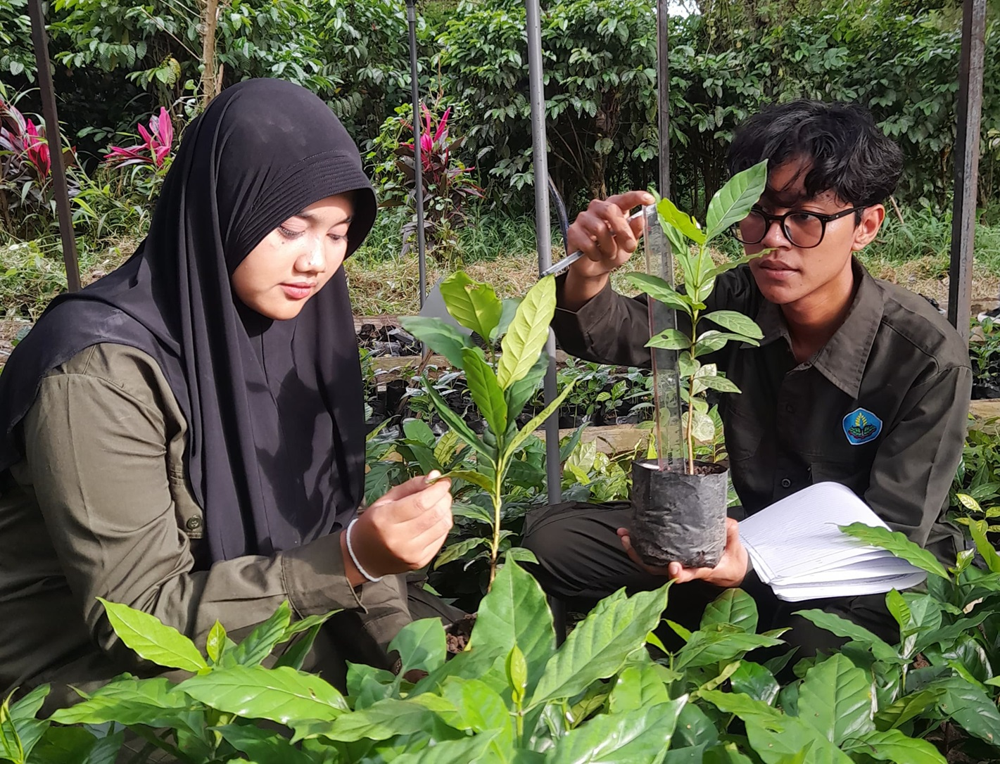
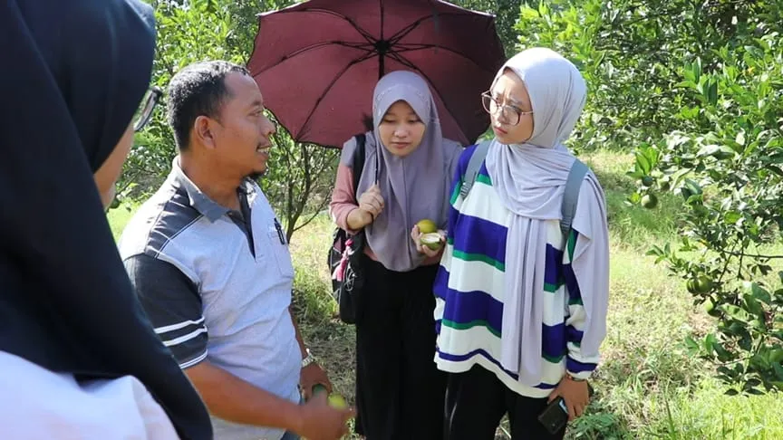
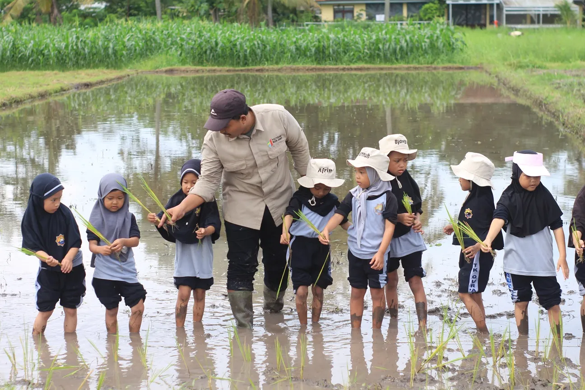
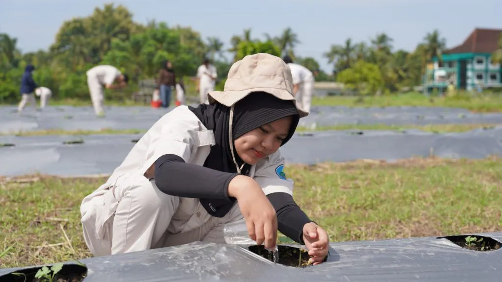

Kebun Inovasi Polije
Ruang hijau pembelajaran vokasi, budidaya hortikultura, dan agrowisata edukasi di lingkungan kampus Politeknik Negeri Jember.
- Pembelajaran vokasi
- Hortikultura
- Agrowisata edukasi

KEBUN INOVASI POLIJE
KEBUN INOVASI POLIJE
Mengenal dan Menjelajahi Kebun Inovasi POLIJE
Platform informasi dan dokumentasi yang memperkenalkan potensi,
kegiatan, serta inovasi di Kebun Inovasi POLIJE.




Unit Teaching Factory Politeknik Negeri Jember yang menjadi sarana pembelajaran praktik nyata melalui konsep pendidikan berbasis industri. Kami menggabungkan budidaya pertanian, penelitian terapan, inovasi teknologi, dan pelayanan masyarakat dalam satu ekosistem.
Melalui konsep learning by doing, mahasiswa memperoleh pengalaman langsung dalam proses produksi, pengelolaan usaha, pelayanan pelanggan, hingga pengembangan produk pertanian yang berorientasi pada kebutuhan industri.

Ruang hijau pembelajaran vokasi, budidaya hortikultura, dan agrowisata edukasi di lingkungan kampus Politeknik Negeri Jember.
Menjadi pusat Teaching Factory unggul berbasis inovasi pertanian dan agroeduwisata yang menghasilkan sumber daya manusia profesional dan berdaya saing.
Dokumentasi pembelajaran, kunjungan, dan kegiatan lapangan






Informasi lokasi dan kontak pengelola untuk mengenal kebun lebih dekat atau merencanakan kunjungan.
Lingkungan kampus Politeknik Negeri Jember
Kampus Politeknik Negeri Jember